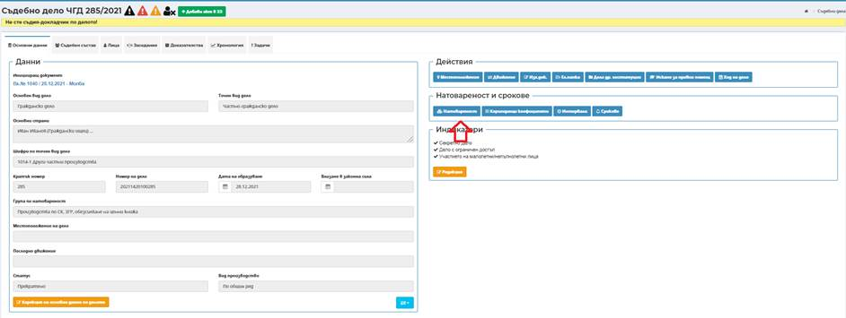

Посредством бутон Натовареност има възможност за извършване на действия и преглед на справки за натовареност на съдия по делото.

Бутон Натовареност дава възможност да се прегледат регистрирани събития по делото за изчисляване на натовареността на съдията-докладчик. При избора му се отваря екран, в който през бутон + Добави коригиращ коефициент системата дава възможност за добавяне на коригиращ коефициент. Всички начислени коригиращи коефициенти се извеждат в списъка през бутон коригиращи коефициенти от основния екран на делото.